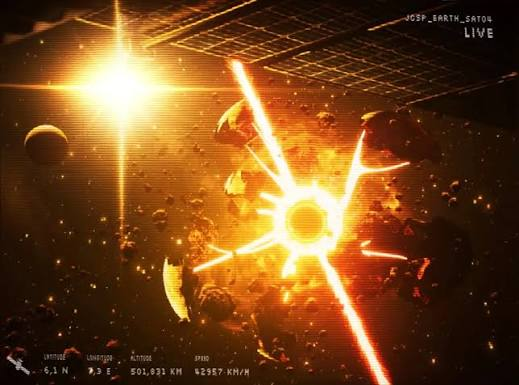

The night settled over the Red Sector like a thick, damp blanket. The
lantern-fruit dimmed to a soft amber glow. The smiling Villager drones had
long since returned to their cabins or simply stood motionless in
the fields, optics dark, as if waiting for morning instructions.
Inside the cabin marked LEX,
Lex sat in his bed, his head tilted and optics offline. His charging port
humming quietly. Across the short path, stood Vex’s in her slumber
in the corner of her own room,
one arm dangling.
Fai’s cabin stayed dark.
She sat on the edge of the narrow cot, labcoat still on, yellow-streaked
hair falling into her face. Sleep refused to come. Every time she closed
her eyes the skeleton in the fields flashed behind her lids—tattered lab
coat, single yellow stripe, picked clean. The broken scanner lay on the
floor where she had thrown it earlier. No signal. No mentor. No results. No progress. Nothing.
She stood.
The door creaked only once as she slipped outside. No Strawberries
waited on the path. The village felt emptier under the dark, yet
somehow more watchful. Fai stayed on guard just in case, her boots silent on the
packed dirt, and moved toward the larger central building Strawberry
had hurried to earlier.
The side entrance was unlocked.
Inside, rows of old computer terminals lined the walls—bulky,
pre-collapse models coated in a thin layer of dust and moss. Some
screens were cracked. Others still held faint standby lights. Power
hummed somewhere deeper in the walls. The village had electricity.
Real electricity. Not scrap-powered jury-rigs.
Fai’s sharp grin returned.
She wiped a screen clean with her sleeve and powered the nearest
terminal. The machine coughed static, then flickered to life in grainy
green text. Files. Logs. Fragmented data. She dug through folders with
the same manic focus she once used in the asteroid labs—searching for
anything tied to the distress signal, the mentor’s encryption signature,
anything.
Nothing clean came up.
Instead, older files surfaced. Human records. Planetary status reports.
One folder labeled simply EARTH.
She opened it.

Images of wars and ruins. Then something worse.
Absolute Solver. Disassembly Drones. The systematic erasure of a world
that had once been home to billions. The files were incomplete,
corrupted, but the story was clear enough. Earth was gone. Humanity’s
cradle had been hollowed out by the very things JCJenson had built.
Fai stared at the screen for a long moment.
She tried to picture her mentor’s face while reading the reports—the
man who had taught her to laugh while the universe tried to eat her.
The memory slipped. Edges blurred. His voice, his eyes, the exact shape
of the scar he always claimed was from a “lab accident”… Her mind simply would not hold the full picture.
FAI
“…Master used to talk about Earth...”
She scrolled further, jaw tightening.
FAI
“They left us on that rock for years. Forgot the colony the second the
numbers stopped looking good. Cults. Purges. Power cells. Prayer
protocols. We tore each other apart while they played god with the
rest of the universe.”
She felt nothing close to sorrow for the destroyed homeworld. Only a
cold, familiar bitterness.
Then the screen flickered again.
A new image loaded—low quality, surveillance footage from somewhere
on this very planet. Yellow optics. Bright. Round. The exact same
shade that glowed behind every Strawberry’s visor.
Fai leaned closer.
The footage showed more of them. Dozens. Spreading through the fields,
the forests, the abandoned agro-domes. Same face. Same soft smile.
Same yellow eyes. Moving in quiet, coordinated patterns that no
single drone should be capable of.
FAI
“Hold on… wasn’t there more of her…?”
Her voice dropped to a whisper.
FAI
“Spreading like a pestilence.”
She reached for another terminal, already half-lost in the data,
fingers flying across keys that still responded. Clues about the
signal. Clues about the boss. Clues about whatever the yellow eyes
really meant.
Somewhere behind her, a soft metallic giggle drifted through the open doorway.
Fai did not turn around immediately. Her attention had already
fractured—half on the screens, half on the growing realization that
the village was not simply strange.
It was definley hiding something or someone.
And Fai had always had trouble focusing on the things that did not
matter to her mission.
Fai reached for the mouse without taking her eyes off the
monitor. She missed it by an inch, and her palm came down
on a plump pink mushroom growing beside the keyboard.
Its cap squished beneath her hand with a soft, wet pop.
...But the spores had only just begun to spread.